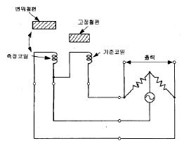
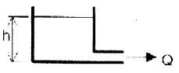
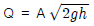
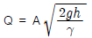
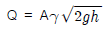
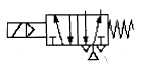

설비보전기사(구) (2007-09-02 기출문제)
1과목: 설비 진단 및 계측
1. 도전성 물체가 자계속을 움직이면 기전력이 발생한다는 패러데이 법칙을 이용하여 도전성 유체의 유량을 구하는 유량계는?
- 초음파식 유량계
- 와류식 유량계
- 전자 유량계
- 완전 용량식 유량계
(정답률: 74%)

2. 다음의 그림은 변위 검출용 센서에서 어떤 원리를 이용한 것인가?

- 차동 변압기의 원리
- 가동 철편식의 원리
- 와전류식의 원리
- 정전용량식의 원리
(정답률: 79%)
3. 회전축계에서 발생하는 이상 현상과 그때의 주파수 영역을 서로 연결해 놓았다. 관련성이 적은 것은?
- 저주파 - 기초 볼트 풀림이나 베어링 마모로 인하여 발생되는 풀림 (이완,looseness)
- 고주파 - 강제 급유되는 미끄럼 베어링을 갖는 회전자(rotor)에서 발생되는 오일 요동(oil whip)
- 고주파 - 유체기계에서 국부적 압력 저하에 의하여 기포가 발생하는 공동현상(cavitation)으로 인한 진동
- 저주파 - 회전자(rotor)의 축심 회전의 질량 분포가 부적정하여 발생하는 진동
(정답률: 74%)
4. 회전체의 회전수를 측정하는 방법 중 정지에 가까운 저속에서는 출력 전압이 감소되므로 저속회전의 검출은 할 수 없지만 내구성이 우수하고 별도의 전원이 필요치 않은 측정법은 무엇인가?
- 회전주기 측정법
- 주파수 계수법
- 전자식 검출법
- 광전식 검출법
(정답률: 71%)
5. 음파의 간섭에 의한 마스킹(Masking)에 대한 설명으로 틀린 것은?
- 크고 작은 두 소리를 동시에 들을 때 큰 소리만 듣고 작은 소리는 잘 듣지 못하는 현상이다.
- 두 음의 주파수가 거의 같을 때는 맥동이 생겨 마스킹 효과가 감소한다.
- 고음이 저음을 잘 마스킹 한다.
- 두 음의 주파수가 비슷할 때 마스킹 효과가 크다.
(정답률: 81%)
6. 다음 중 실용적으로 폭넓게 사용되는 설비진단 기법이 아닌 것은?
- 진동법
- 오일 분석법
- 응력법
- 파괴시험법
(정답률: 77%)
7. 다음 중 주파수의 단위로 사용되는 것은?
- rad/s
- m/s
- cycle/s
- m/s2
(정답률: 76%)
8. 진동 현상을 설명하는데 있어서 진폭 표시의 파라미터로 적합하지 않는 것은?
- 변위
- 속도
- 위상
- 가속도
(정답률: 81%)
9. 두 물체의 고유진동수가 같을 때 한 쪽을 울리면 다른쪽도 울리는 현상은?
- 고체음
- 맥동음
- 난류음
- 공명
(정답률: 84%)
10. 액면의 높이가 h[m], 배관의 면적이 A[m2], 액체의 비중량이[N/m3]일 때 배관을 빠져나오는 유량 Q[m3/s]는? (단, g는 중력 가속도 m[m/sec2] 이다.)

- Q = Ah



(정답률: 64%)
11. 송풍기를 가동하면 송풍기와 연결된 덕트(duct)에서 공진이 발생하여 심한 진동현상이 나타났다. 덕트의 고유진동수를 높여서 공진을 피하고자 할 때 가장 적절한 조치 방법은?
- 송풍기의 흡입구를 두 곳으로 설치한다.
- 동력을 증가시킨 모터로 교체한다.
- 송풍기 임펠러의 강성을 증가 시킨다.
- 덕트의 강성이 커지도록 보강한다.
(정답률: 68%)
12. 정현파의 한 파장이 10m이고 음속이 340m/s 이다. 이정 현파의 진동수는 얼마인가.
- 0.3 Hz
- 34 Hz
- 340 Hz
- 3400 Hz
(정답률: 73%)
13. 다음의 진동 센서 중 진동의 변위를 전기신호로 변환하여 진동을 검출하는 센서는?
- 와전류형
- 동전형
- 압전형
- 서보형
(정답률: 68%)
14. 다음 중 설비의 제1차 진단기술로서 현장 작업원이 사용하는 기술은?
- 간이진단 기술
- 정밀진단기술
- 스트레스 정량화 기술
- 고장검출 해석 기술
(정답률: 88%)
15. 다음 중 진동센서의 선정이 옳은 것은?
- ISO10816 기준에 의거 설비상태관리를 하기 위하여 변위센서(Proximity Probe)를 사용한다.
- 저널 베어링의 진동을 측정하기 위하여 속도센서를 사용한다.
- 베어링이나 기어 등의 고주파 영역의 결함을 발견하기 위하여 가속도 센서를 사용한다.
- 축의 거동상태를 파악하기 위하여 가속도 센서를 사용한다.
(정답률: 65%)
16. 유체의 흐름 속에 날개가 있는 회전자를 설치해서 그 회전수를 검출해서 유량을 구하는 유량계는?
- 터빈식 유량계
- 와류식 유량계
- 용적식 유량계
- 면적식 유량계
(정답률: 82%)
17. 진동하는 동안 마찰이나 다른 저항으로 에너지가 손실되지 않는다면 그 진동을 무엇이라 하는가?
- 자유진동(free vibration)
- 강제진동(forced vibration)
- 비감쇠진동(undamped vibration)
- 감쇠진동(damped vibration)
(정답률: 80%)
18. 측정 시 발생하는 오차 중 항상 참 값보다 작게 또는 크게 측정되는 경향을 보이는 것으로서 보정되지 않은 계측기의 측정에 의한 계기적 오차를 무엇이라 하는가?
- 과오 오차
- 계통오차
- 우연 오차
- 최대 가능 오차
(정답률: 66%)
19. 측정하고자 하는 소음원 이외의 주변 소음은?
- 암소음
- 정상소음
- 환경소음
- 충격소음
(정답률: 60%)
20. 다음 중 소음 방지 방법으로 볼 수 없는 것은?
- 흡음
- 차음
- 음의 마스킹
- 소음원 차단
(정답률: 77%)
2과목: 설비관리
21. 설비계획의 목적이 아닌 것은?
- 설비에 대한 투자의 최대화
- 전체 생산시간의 최소화
- 자재 운반비용의 최소화
- 종업원의 편리, 안전을 제공함
(정답률: 73%)
22. 다음 중 예방보전(productive maintenance) 발전 과정이 옳은 것은?
- PM(예방보전) → CM(개량보전) → MP(보전예방) → PM(생산보전) → TPM(종합적 생산보전)
- PM(생산보전) → MP(보전예방) → CM(개량보전) → PM(에방보전) → TPM(종합적 생산보전)
- PM(예방보전) → PM(생산보전) → CM(개량보전) → MP(보전예방) → TPM(종합적 생산보전)
- PM(생산보전) → PM(예방보전) → CM(개량보전) → MP(보전예방) → TPM(종합적 생산보전)
(정답률: 53%)
23. 최대부하와 설비용량과의 비를 말하며, 백분율로 표시되는 이것은?
- 대비율(對比率)
- 수요율(需要率)
- 부등율(不等率)
- 설비이용율(設備利用率)
(정답률: 64%)
24. 설비의 수명 주기 중에서 건설단계에 해당하는 활동들은?
- 설비의 조사 및 연구 분석
- 설계, 제작 및 설치
- 운전 및 보전
- 조사, 연구, 설계, 제작, 설치
(정답률: 70%)
25. 설비보전시스템 체계도를 구성할 때, 제일 먼저 고려할 사항은?
- 표준설정
- 보전계획
- 생산계획
- 보전예방
(정답률: 66%)
26. 다음 중 생산의 3요소가 아닌 것은?
- 사람
- 설비
- 재료
- 생산성
(정답률: 70%)
27. 생산보전활동 중 최적보전계획을 위해서 활용되는 방법은?
- 수학적 방법
- MTBF 법
- MTTR 법
- PM 분석법
(정답률: 42%)
28. 공장 에너지 관리에 관한 사항 중 틀리게 설명한 것은?
- 최소한의 전력을 가지고 최대의 효과를 올릴 수 있어야 한다.
- 연료는 사용목적에 적합한 것을 선택하며, 값싸고 쉽게 확보할 수 있는 것이어야 한다.
- 전력의 낭비를 직접낭비와 간접낭비로 나눌 때, 누전, 기계의 공전 등은 간접낭비로 분류된다.
- 열 설비의 저 능률설비에 대해서 그 요인을 분석하고 보전, 개선 혹은 갱신하는 것이 중요하다.
(정답률: 78%)
29. 설비의 분류 방법 중 효율적이지 못한 것은?
- 구입순, 배치순으로 기호를 부여한다.
- 도서분류법과 같이 표기한다.
- 기억식(첫글자) 기호법을 사용한다.
- 연속번호 중에서 일정 단위(범위)를 정하여 분류한다.
(정답률: 63%)
30. 제조원가 추정 시 일반적으로 제조간접비는 간접배부율이라는 형태로 산출한다. 다음 중 제조간접비 산출 방법이 아닌 것은?
- 직접노무시간법(direct-labor-hours method)
- 직접설비비용법(direct-machine-cost method)
- 기계가동시간법(machine-hour-rate method)
- 직접노무비법(direct-labor-cost-method)
(정답률: 50%)
31. 보전비 예산 편성은 개별계획과 기간계획, 조정으로 분류 되는데 개별 계획에 들어가지 않는 것은?
- 개별보전계획(예방, 사후, 개량보전)
- 보전비 견적적산(적산기준, 물가지수)
- 예산 요구액
- 보전비 예산 할당액(보전비 효율 등)
(정답률: 48%)
32. 다음은 설비의 만성로스 개선기법들이다. 시스템의 잠재적 결함을 조직적으로 규명하고 조사하는 설계 기법의 하나로서 설비 사용자에게도 설비의 끊임없는 평가와 개선을 실시할 수 있는 고장 유형, 영향 분석 기법은?
- 고장유형, 영향 및 심각도 분석(FMECA)
- PM 분석
- QM 분석
- FTA 분석
(정답률: 70%)
33. 설비의 보전효과를 측정하는 방법은 여러 가지가 있다. 다음 보전 효과 측정방법 중 틀린 것은?
- 평균수리시간(MTTR) = 고장수리시간 /정지회수
- 평균가동시간 (MTBF) = 가동시간/고장회수
- 고장빈도(회수)율 = (고장시간/가동시간) x 100
- 설비가동률 = (가동시간/부하시간) x 100
(정답률: 48%)
34. 계측 관리를 하기 위하여 공정의 흐름과 관련을 객관적, 도식적으로 표현하여 관계자의 관점을 계통적으로 표현한 기술 양식은?
- 공정명세표
- 작업표준서
- 공정일정표
- 프로세서 흐름도
(정답률: 65%)
35. 검사제도를 확립하여 설비의 열화 경향을 조사하고 어느 시설의 어느 개소를 수리할 것인가를 예측하며, 필요한 자재와 인원을 준비하여 설비 열화에 대한 대책을 수립하고 기업의 생산성을 높이는 활동은 무엇이라고 하는가?
- 고장 예방
- 개량 보전
- 설비 보전
- 예방 보전
(정답률: 64%)
36. 수리공사를 하기 위해서는 절차, 재료, 공수 등 공사 견적을 실시하게 되는데 수리공사 견적법으로 사용되지 않는 것은?
- 경험법
- 실적 자료법
- 보존 자료법
- 표준 품셈법
(정답률: 63%)
37. 제품의 종류가 많고 수량이 적으며 주문생산과 표준화가 곤란한 다품종 소량생산일 경우에 알맞은 배치형식은?
- 제품별 배치
- 제품고정형 배치
- 혼합형 배치
- 기능별 배치
(정답률: 71%)
38. 품질보전의 전개순서로 적절한 것은?
- 현상분석 → 목표설정 → 표준화 → 요인해석 → 검토 → 실시 → 결과확인
- 현상분석 → 목표설정 → 요인해석 → 검토 → 실시 → 결과확인 → 표준화
- 현상분석 → 목표설정 → 표준화 → 검토 → 요인해석 → 실시 → 결과확인
- 현상분석 → 요인해석 → 검토 → 실시 → 표준화 → 목표설정 → 결과확인
(정답률: 71%)
39. 품질보전 추진방법에서 불량이 나지 않는 조건대로 관리되고 있는지를 위하여, 선정된 점검항목을 빠짐없이 확실하게 실시하기 위하여 품질특성과 설비 각 부위의 기준치와의 관련성을 정리한 것은?
- 불합리 일람표 작성
- 4M 조건 조사 분석
- QA 매트릭스
- QM 매트릭스
(정답률: 56%)
40. 보전비를 들여서 설비를 만족상태로 유지함으로써 생산성을 높일 수 있다면, 이때 발생되는 손실은?
- 기회 손실
- 원가 손실
- 설비 손실
- 생산손실
(정답률: 67%)
3과목: 기계일반 및 기계보전
41. 다음 중 교류아크 용접기의 종류가 아닌 것은?
- 가동 철심형
- 가동코일형
- 엔진 구동형
- 탭 전환형
(정답률: 66%)
42. 측정하려고 하는 양의 변화에 대응하는 측정기구의 지침의 움직임이 많고 적음을 가리키며 일반적으로 측정기의 최소 눈금으로 표시하는 것은?
- 정확도
- 정밀도
- 감도
- 최소눈금
(정답률: 70%)
43. 안전밸브의 디스크 형상에 영향을 주는 인자가 아닌 것은?
- 양력과 반동력
- 배압
- 열응력
- 플러터링
(정답률: 61%)
44. 다음 기어의 손상 중 표면피로에 의한 손상만으로 연결된 것은?
- 습동마모 - 피닝 항복 - 스코링
- 로오링 - 균열 - 버어닝
- 스폴링 - 스코링 - 리프링
- 초기 피칭 - 파괴적 피칭 - 스폴링
(정답률: 62%)
45. 탭(tap)의 파손 원인으로 틀린 것은?
- 구멍이 너무 작거나 구부러진 경우
- 탭이 경사지게 들어간 경우
- 막힌 구멍의 밑바닥에 탭의 선단이 닿았을 경우
- 3번 탭으로 최종 다듬질 할 경우
(정답률: 79%)
46. 금속재료의 냉간가공에 따른 성질 변화 중 옳지 않는 것은?
- 인장강도 증가
- 경도 증가
- 연신률 감소
- 인성 증가
(정답률: 54%)
47. 감속기의 점검결과에 따른 조치 방법이 맞게 연결되지 않은 것은?
- 윤활유량이 하한선 아래 있음 - 오일 보충
- 진동 및 발열, 소음 발생 - 오일 교환
- 입, 출력축의 중심선이 어긋나 있음 - 재조정 작업
- 접촉면에 박리 현상 있음 - 수리하거나 교체
(정답률: 77%)
48. 경도와 취성을 줄이고 강인성을 부여하기 위해 담금질 강을 A1 변태점 이하의 일정온도로 가열한 후 냉각하는 열처리를 무엇이라 하는가?
- 뜨임
- 담금질
- 불림
- 풀림
(정답률: 75%)
49. 응력집중에 의한 축의 파단원인으로 볼 수 없는 것은?
- 커플링 중심내기 불량
- 설계형상의 오류
- 축의 가공 불량
- 키 홈의 마모
(정답률: 75%)
50. 전동밸브가 개폐중에 멈추었다. 고장원인이 될 수 있다고 생각되는 것을 고려하여 점검해야 하는 항목이 아닌 것은?
- 스템(Stem) 나사부의 윤활유 부족 또는 부적절
- 밸브 시트(Seat)면의 손상
- 스템 나사부의 움직임 불량
- 밸브 내부의 구동부에 이물질에 의한 동작 방해
(정답률: 61%)
51. 관경이 비교적 크거나 내압이 높은 배관을 연결할 때 나사 이음, 용접 등의 방법으로 부착하고 분해가 가능한 관 이음쇠는?
- 주철관 이음쇠
- 플랜지 이음쇠
- 신축 이음쇠
- 유니온 이음쇠
(정답률: 75%)
52. 운동체와 정지체와의 기계적 접촉에 의해 운동체를 감속하고 정지 또는 정지상태를 유지하는 기능을 가지는 요소는?
- 클러치
- 브레이크
- 래치 휠
- 감속기
(정답률: 80%)
53. 부러진 볼트를 빼려고 한다. 사용되는 공구와 구멍 지름과 볼트 지름과의 관계에 대한 것으로 맞는 것은?
- 스크루 엑스트렉터 : 30% 정도
- 스크루 엑스트렉터 : 60% 정도
- 오스터 : 30% 정도
- 오스터 : 60% 정도
(정답률: 70%)
54. 나사의 종류를 표시하는 기호 중에서 유니파이 가는나사를 나타내는 것은?
- UNC
- UNF
- Tr
- M
(정답률: 75%)
55. 원심 압축기에서 발생할 수 있는 제 현상 중 초킹현상을 바르게 설명한 것은?
- 토출 측의 저항이 증대하면 풍량이 감소하여 압력상승이 생겨 진동이 심하게 발생하는 현상
- 압축기의 안내깃 감속익렬의 압력상승은 충격파를 발생시켜 압력과 유량이 상승하지 않는 현상
- 흡입관로의 흡입기계의 고유진동수와 압축기의 고유 진동수가 일치하는 현상
- 일렬의 양각이 커지면서 실속을 일으켜 깃에서 실속이 발생하는 현상
(정답률: 48%)
56. 원심 압축기에서 누설손실이 생기는 것이 아닌 것은?
- 회전차 입구와 케이싱 사이
- 축의 케이싱을 통과하는 부분과 평형장치 사이의 틈
- 다단의 경우 각단의 격판과 축 사이의 틈
- 베어링과 패킹 상자
(정답률: 63%)
57. 기어의 요목표에 없어도 되는 것은?
- 기어의 치형
- 기어의 모듈
- 기어의 재질
- 기어의 압력각
(정답률: 76%)
58. 전동기가 회전 중 진동현상을 보이고 있다. 다음 중 그 원인으로 틀린 것은?
- 냉각 불충분
- 베어링 손상
- 커플리, 풀리의 느슨해짐
- 로터와 스테이터의 접촉
(정답률: 74%)
59. 코일 스프링의 작도법 중 옳지 못한 것은?
- 무하중 상태에서 그리는 것을 원칙으로 한다.
- 하중과 높이(또는 길이) 또는 처짐과의 관계를 표시할 필요가 있을 때에는 선도 또는 표로 나타낸다.
- 그림 안에 기입하기 힘든 사항은 표제란에 기입한다.
- 그림에서 단서가 없는 코일 스프링이나 볼류트스프링은 모두 오른쪽으로 감은 것으로 나타낸다.
(정답률: 50%)
60. 밀링 커터 인선에서 경사면과 여유면과의 맞대인 각으로서 경사각과 여유각에 따라 결정되어 지는 각은?
- 경사각
- 여유각
- 절인각
- 랜드(land)
(정답률: 65%)
4과목: 윤활관리
61. 다음 중 일반적으로 윤활유를 채취하여 검사할 때 어느 지점이 가장 적당한다.
- 오일 저장탱크(oil reservoir)
- 오일 펌프 디스챠지(oil pump discharge)
- 베어링(bearing) 인입구
- 유 회수관(oil return line : bearing을 거쳐나온 oil)
(정답률: 67%)
62. O/W 유화형 작동유의 특징이 아닌 것은?
- 불연성이다.
- 냉각성이 양호하다.
- 점도 변화가 크다.
- 환경보전성이 양호하다.
(정답률: 61%)
63. 윤활유의 산화정도를 나타내는 시험방법인 전산가(TotalAcid Number)에 대한 정의는?
- 시료 1g중에 함유된 전 산성 성분을 중화하는데 소요되는 KOH의 mg수
- 시료 10g중에 함유된 전 산성 성분을 중화하는데 소요되는 KOH의 mg수
- 시료 1g중에 함유된 전 알칼리 성분을 중화하는데 소요되는 산과 다량의 KOH의 mg수
- 시료 10g중에 함유된 전 알칼리 성분을 중화하는데 소요되는 산과 다량의 KOH의 mg수
(정답률: 66%)
64. 다음 중 고하중 기어나 극압성이 큰 압연기 등에 사용되는 윤활유로 맞는 것은?
- 마일드 EP형
- 레귤러형
- 웜형
- 다목적용
(정답률: 74%)
65. 운전 중 압축기 윤활유의 윤활관리를 위해 관리해 주는 항목 중 옳지 않은 것은?
- 윤활유의 색상(oil color)
- 베어링 검사
- 윤활유 흐름의 적정성
- 윤활유 온도
(정답률: 73%)
66. 터빈의 윤활고장 중 기포 발생 시 장애가 아닌 것은?
- 유압작동유 불량
- 윤활 사고
- 윤활유 산화 촉진
- 윤활유 열화
(정답률: 46%)
67. 윤활유(적유)를 선정할 때 가장 중요시 하여야 할 항목은?
- 비중
- 동점도
- 중화가
- 산화안정성
(정답률: 49%)
68. 다음 중 윤활유의 열화 요인과 거리가 가장 먼 것은?
- 산화(oxidation)
- 질화(nitrification)
- 이물질 유입
- 유화
(정답률: 59%)
69. 베어링 윤활에서 일반적으로 고려할 사항과 거리가 먼 것은?
- 운전속도
- 하중
- 침전가
- 적정점도
(정답률: 67%)
70. 그리스와 액상 윤활제의 비교에서 액상 윤활제의 특징이 아닌 것은?
- 모든 속도에 가능
- 밀봉장치 설계가 용이
- 먼지의 여과가 용이
- 세부 윤활이 용이
(정답률: 71%)
71. 집중 그리스 윤활장치에서 각 급유 개소 베어링의 급유량을 개별적으로 조절하는 부품은?
- 압송펌프
- 절환변
- 기동 타이머
- 분배 밸브
(정답률: 74%)
72. 윤활 관리 기법에 관한내용으로 적당치 않는 것은?
- 유종 및 동점도는 통일화, 단순화 한다.
- 윤활제는 불연성물질로써 연료유, 유기용제류 등과 통합 보관한다.
- 윤활제는 먼저 입고된 것을 먼저 사용하는 선입선출의 원칙을 지킨다.
- 윤활개소에 색, 모형, 숫자 등을 사용하여 유종이나 교환주기를 표시해 둔다.
(정답률: 73%)
73. 윤활의 운동형태 측면에서 굴림 운동 혹은 미끄럼 운동으로 나눠 볼 수 있다. 기계요소 측면에서 미끄럼 및 굴림운동 모두 해당하는 곳이 아닌 곳은?
- 헬리컬 기어
- 하이포이드 기어
- 베벨기어
- 유압실린더
(정답률: 65%)
74. 윤활제의 저장 보관 시 공통적으로 알아 두어야 할 사항과 거리가 먼 것은?
- 청결정돈
- 안전
- 윤활제의 취급방법
- 방청관리의 철저
(정답률: 62%)
75. 윤활제의 성질 중 액체가 유동할 때 나타나는 내부저항을 의미하는 것은?
- 유동점
- 산화 안정도
- 점도
- 중화가
(정답률: 68%)
76. 윤활의 목적을 기술한 것 중 잘못된 것은?
- 마찰과 마모를 감소시킴
- 부식을 최대화 함
- 베어링의 냉각 작용
- 이물질의 침입에 대한 Sealing 효과
(정답률: 80%)
77. 그리스 혼화주도를 나타내는 번호는?
- NLGI
- API
- SAE
- ASTM
(정답률: 59%)
78. 윤활유의 점도와 온도의 관계를 지수로 나타내는 실험값으로 맞는 것은?
- 점도지수
- 색
- 유동점
- 인화점 및 연소점
(정답률: 75%)
79. 기어용 윤활유의 필요한 성상에 해당하지 않는 것은?
- 적정한 점도 유지 및 저온 유동성
- 내하중성, 내마모성
- 열안정성, 산화 안정성
- 발포성
(정답률: 76%)
80. 다음은 유분석을 위한 시료 채취 시 주의 사항이다. 옳지 않은 것은?
- 시료는 가동 중인 설비에서 채취한다.
- 탱크 바닥에서 채취한다.
- 필터 전, 기계요소를 거친 지점에서 채취한다.
- 샘플링 Line이나 밸브, 채취 기구는 샘플링 전에 충분히 Flushing을 한다.
(정답률: 73%)
5과목: 공유압 및 자동화
81. 다음 유압 부속기기의 설명 중 옳지 않은 것은?
- 축압기는 펌프유량보충, 누설보상, 정전 시 비상원 등으로 사용된다.
- 증압기는 표준 유압펌프 하나만으로 얻을 수 있는 압력보다 높은 압력을 발생시키는데 사용된다.
- 오일탱크(oil tank)는 유압유 저장, 열교환, 오염물질제거, 공기배출의 기능이 있다.
- 실(seal)은 정적실과 동적실로 나뉘며, 정적실은 패킹(packing)이라고도 한다.
(정답률: 63%)
82. 다음 공유압의 원리 설명 중 옳지 않은 것은?
- 여러 대의 유압장치를 구동하는 경우 공동의 펌프로 유압 에너지를 제공한다.
- 가압유체의 흐름의 방향을 제어하는 곳에 방향제어 밸브를 사용한다.
- 가압유체의 속도조절에는 유량 제어 밸브를 사용한다.
- 가압유체의 에너지 변환에는 액추에이터를 사용한다.
(정답률: 60%)
83. 다음 중 공압의 특징으로 맞는 것은?
- 인화의 위험이 없다.
- 작업 속도가 느리다.
- 온도의 변화에 민감하다.
- 저속에서 균일한 속도를 얻을 수 있다.
(정답률: 72%)
84. 다음은 유압 텔레스코프형 다단실린더의 설명으로 옳지 않은 것은?
- 유압 실린더 내부에 다시 별개의 실린더를 내장한 구조이다.
- 유압유가 유입되면 순차적으로 실린더가 동작한다.
- 긴 행정거리가 요구되는 경우에 사용한다.
- 정확한 위치제어를 행하는 경우에 사용한다.
(정답률: 60%)
85. 공기의 흐름을 한쪽 방향으로만 자유롭게 흐르게 하고, 반대 방향으로 흐름을 저지하는 밸브는?
- 저지(shut-off) 밸브
- 스풀(spool) 밸브
- 체크(check) 밸브
- 포핏(poppet) 밸브
(정답률: 79%)
86. 다음 중 작업경험 등을 반영하여 적절한 작업을 행하는 제어 기능을 가진 로봇은?
- 플레이백 로봇
- 학습제어 로봇
- 감각제어 로봇
- 수치제어 로봇
(정답률: 79%)
87. 보전이 필요 없는 시스템 설계가 기본개념인 보전방식은 무엇인가?
- 사후 보전
- 예방 보전
- 보전 예방
- 개량 보전
(정답률: 63%)
88. 공압용 서비스 유닛(Service Unit)의 구성요소로 짝지어진 것은?
- 공압필터 - 압력조절기 - 윤활기
- 공압필터 - 냉각기 - 윤활기
- 윤활기 - 압력조절기 - 냉각기
- 공압필터 - 압력계 - 건조기
(정답률: 64%)
89. 공압을 이용한 시퀸스 제어에서 발생하는 신호의 간섭을 제거할 수 있는 방법으로 틀린 것은?
- 오버센터 장치를 이용한 방법
- 방향성 롤러레버를 이용한 방법
- 공압 타이머를 이용한 방법
- 압력조절 밸브를 이용한 방법
(정답률: 55%)
90. 유압제어 밸브의 사용 목적이 아닌 것은?
- 힘의 제어가 용이 하다.
- 속도 제어가 용이 하다.
- 큰 에너지의 축적이 용이 하다.
- 운전 방향의 전환이 용이 하다.
(정답률: 60%)
91. 유체 정역학의 기본원리로 액체에 전해지는 압력은 모든 방향에 동일하며, 용기의 각 면에 직각으로 작용한다는 원리는?
- 오일러의 정리
- 파스칼의 원리
- 베르누이의 정리
- 에너지 보존의 법칙
(정답률: 73%)
92. 제어시스템은 에너지 요소 - 신호 입력 요소 - 신호 처리 요소 - 신호 출력 요소로 구성되는 신호 전달 체계를 갖는다. 전기회로 구성 요소 중에서 푸시버튼 스위치는 신호 전달 체계에서 어느 부분에 해당되는가?
- 에너지 요소
- 신호 입력 요소
- 신호 처리 요소
- 신호 출력 요소
(정답률: 76%)
93. 다음의 공압 기호에 대한 설명 중 틀린 것은?

- 이 밸브는 플런저 조작 방식의 방향 제어 밸브이다.
- 이 밸브는 5포트 2위치 방향 제어 밸브이다.
- 이 밸브는 조작력을 가하지 않은 초기 상태가 오른쪽이다.
- 이 밸브는 절화 위치에 따라 2개의 배기포트를 번갈아 사용한다.
(정답률: 54%)
94. 다음 중 펌프가 소음을 내는 이유가 아닌 것은?
- 펌프의 회전이 너무 빠른 경우
- 작동유의 점도가 너무 낮은 경우
- 흡입관이 막혀 있는 경유
- 유중에 기포기 있는 경우
(정답률: 63%)
95. 다음 중 동기 전동기의 장점이 아닌 것은?
- 기동 시 조작이 용이 하다.
- 부하의 변화로 속도가 변하지 않는다.
- 높은 역률로 운전할 수 있다.
- 전원주파수가 일정하면 회전속도도 일정하다.
(정답률: 54%)
96. 다음 중 공기압축기의 종류가 아닌 것은?
- 왕복 피스톤 압축기
- 트로코이드형 압축기
- 스쿠류형 압축기
- 터보 압축기
(정답률: 53%)
97. PID 고전 제어에 있어서 에러를 없애주는 제어장치는 ?
- 비례제어기
- 적분제어기
- 미분제어기
- 증폭기
(정답률: 66%)
98. 공압 실린더의 배기압을 빨리 제거하여 실린더의 전진이나 복귀속도를 빠르게 하기 위한 목적으로 실린더와 최대한 가깝게 설치하여 사용하는 밸브는?
- 배기 교축 밸브
- 급속 배기 밸브
- 속도 제어 밸브
- 쿠션 조절 밸브
(정답률: 77%)
99. 다음 자동제어 중에서 개회로 제어(Open lop control)에 해당하는 것은?
- PLC에 의한 공압 솔레노이드 밸브 제어
- CNC 공자기계 이송테이블 제어
- 수직다관절 로봇의 모션제어
- 서보모터를 이용한 단축 위치 제어
(정답률: 71%)
100. PLC 장비의 설치 환경으로 적당한 것은?
- 제어기 주변의 온도가 -10~0℃가 유지되어야 한다.
- 주변에 부식성 가스가 누출되는 곳이 있다.
- 급격한 온도의 변화로 이슬 맺힘이 업어야 한다.
- 분진과 진동이 발생하는 장비가 가까이 있다.
(정답률: 77%)